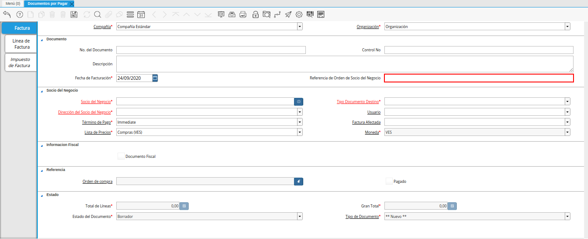
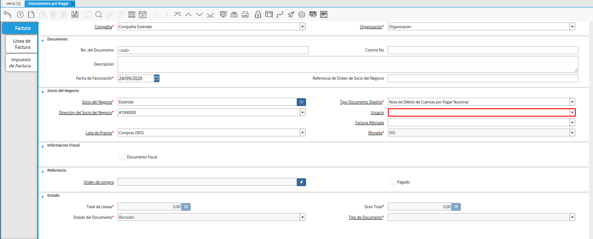
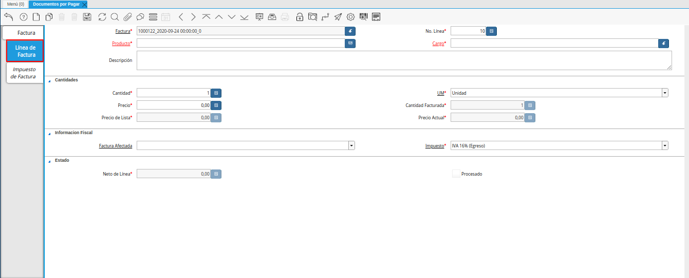
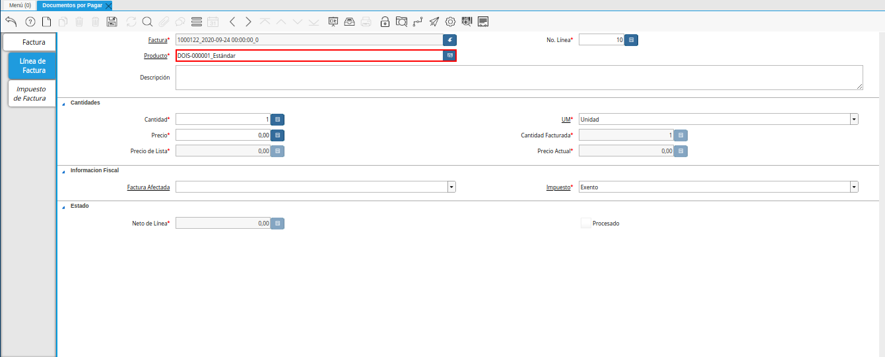
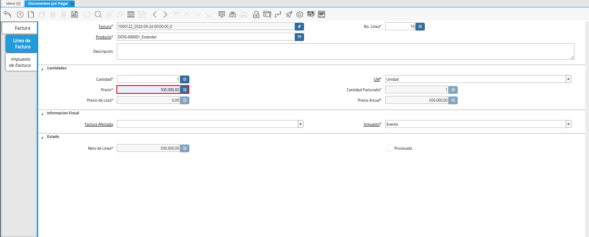
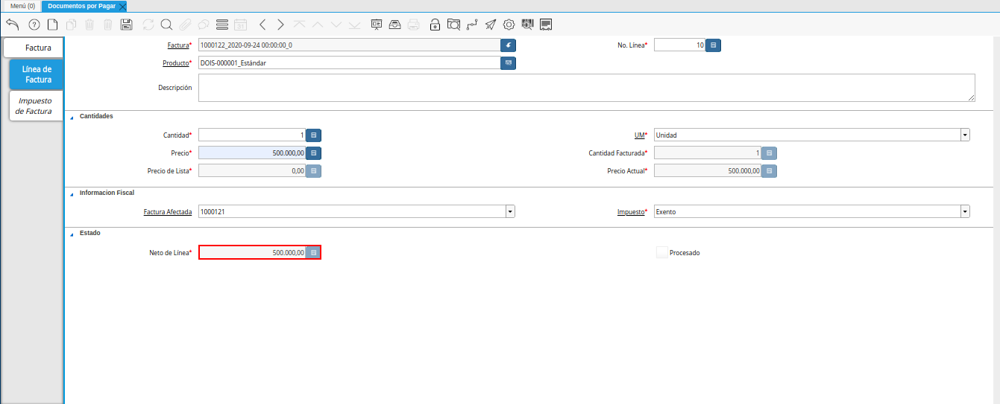
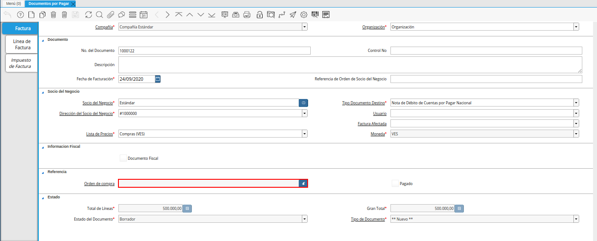
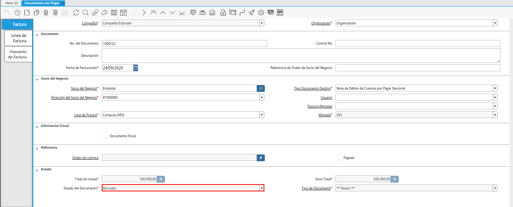
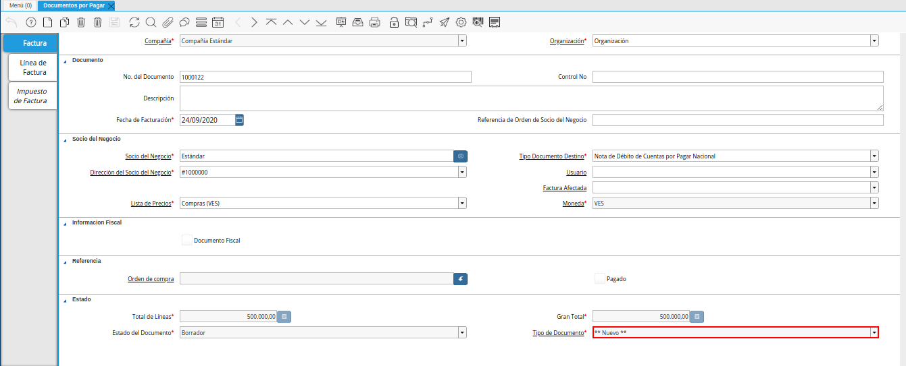

5.5. Nota de Débito¶
Es un documento que se aplica a una factura para aumentar el monto de la misma, una nota de débito se podría realizar bajo el concepto de gastos administrativos y siempre nace de un documento afectado como una factura o una nota de débito.
A continuación es explicado el procedimiento para generar en ADempiere, una nota de débito de cuentas por pagar.
5.5.1. Registro de Nota de Débito¶
Ubique en el menú de ADempiere, la carpeta “Gestión de Compras”, luego seleccione la ventana “Documentos por Pagar”, adjunto imagen para referencia.

Imagen 1. Menú de ADempiere
Podrá visualizar la ventana “Documentos por Pagar”, con todos los registros que contiene ADempiere referente a documentos por pagar.

Imagen 2. Ventana Documentos por Pagar
Seleccione la opción “Registro Nuevo” en la barra de herramientas de ADempiere, para crear un documento nuevo en la ventana “Documentos por Pagar”.

Imagen 3. Registro Nuevo
Seleccione en el campo “Organización”, la organización para la cual se encuentra realizando la nota de débito, el valor en el mismo debe ser diferente del símbolo (*).

Imagen 4. Campo Organización
En el campo “No. de Documento”, no es necesario ingresarlo en forma manual, al momento de realizar un registro, ADempiere genera un número de secuencia automáticamente para el documento, al seleccionar la opción guardar del nuevo registro de documento por pagar.

Imagen 5. Campo No. del Documento
Introduzca en el campo “Contol No”, el número de control fiscal correspondiente al registro que se encuentra realizando.

Imagen 6. Campo Control No.
Introduzca en el campo “Descripción”, una breve descripción con respecto al documento que se encuentra realizando.

Imagen 7. Campo Descripción
Seleccione en el campo “Fecha de Facturación”, la fecha en la cual es realizado el documento.

Imagen 8. Campo Fecha de Facturación
En el campo “Referencia de Orden de Socio del Negocio”, se puede ingresar la referencia de orden del socio del negocio para esta transacción específica. Frecuentemente los números de orden de compras se dan para ser impresas en las facturas como una referencia más fácil.

Imagen 9. Campo Referencia de Orden de Socio del Negocio
Seleccione en el campo “Socio del Negocio”, el socio del negocio al cual le esta aplicando la nota de débito.

Imagen 10. Campo Socio del Negocio
Seleccione el tipo de documento a generar en el campo “Tipo de Documento”, la selección de este define el comportamiento del documento que se esta elaborando, dicho comportamiento se encuentra explicado en el documento “Tipo de Documento” elaborado por ERPyA.

Imagen 11. Campo Tipo de Documento
Podrá visualizar en el campo “Dirección de Socio del Negocio”, la dirección del socio del negocio seleccionado anteriormente en el campo “Socio del Negocio”.

Imagen 12. Campo Dirección del Socio del Negocio
De igual manera, puede visualizar en el campo “Usuario”, el usuario en ADempiere del socio del negocio seleccionado anteriormente.

Imagen 13. Campo Usuario
Seleccione en el campo “Factura Afectada”, la factura a la cual requiere aplicar la nota de débito que se encuentra realizando para ser asignada automáticamente al registro que se encuentra realizando.

Imagen 14. Campo Factura Afectada
Seleccione en el campo “Lista de Precios”, la lista de precios con la cual requiere generar la nota de débito.

Imagen 15. Campo Lista de Precios
Podrá visualizar en el campo “Moneda”, la moneda definida para la lista de precios seleccionada.

Imagen 16. Campo Moneda
El checklist “Documento Fiscal”, indica que el registro en el que se encuentra es un documento fiscal.

Imagen 17. Checklist Documento Fiscal
Note
Recuerde guardar el registro de los campos de la ventana antes de cambiar a otra pestaña. Esto se puede realizar seleccionando el icono “Guardar Cambios”, ubicado en la barra de herramientas de ADempiere.
5.5.2. Línea de la Factura¶
Seleccione la pestaña “Línea de Factura”, para proceder a cargar los productos o servicios correspondientes a la nota de débito que se encuentra realizando.

Imagen 18. Pestaña Línea de Factura
Podrá visualizar en el campo “Factura”, el número de registro de la nota de débito al que pertenece la línea que se encuentra realizando.

Imagen 19. Campo Factura
De igual manera, podrá visualizar en el campo “No. Línea”, el número de línea correspondiente al registro en el cual se encuentra ubicado.

Imagen 20. Campo No. del Documento
Seleccione en el campo “Producto”, el producto por el cual se encuentra aplicando la nota de débito.

Imagen 21. Campo Producto
Warning
Si la nota de débito es por un concepto especial, como es el caso de gastos administrativos, sustituya el producto por un cargo que justifique la nota.
Seleccione en el campo “Cargo”, el cargo por el cual se encuentra aplicando la nota de débito.

Imagen 22. Campo Cargo
Introduzca en el campo “Descripción”, una breve descripción referente al registro que se encuentra realizando.

Imagen 23. Campo Descripción
Seleccione en el campo “Cantidad”, la cantidad correspondiente al registro que se encuentra realizando.

Imagen 24. Campo Cantidad
Seleccione en el campo “UM”, la unidad de medida relacionada al registro que se encuentra realizando.

Imagen 25. Campo UM
Introduzca en el campo “Precio”, el precio correspondiente a la nota de débito que se encuentra realizando.

Imagen 26. Campo Precio
Note
El precio ingreso es convertido al precio real basado en la conversión de la unidad de medida seleccionada en el campo “UM”.
Podrá visualizar en el campo “Cantidad Facturada”, la cantidad facturada correspondiente al registro que se encuentra realizando.

Imagen 27. Campo Cantidad Facturada
Introduzca en el campo “Precio de Lista”, el precio oficial correspondiente a la nota de débito que se encuentra realizando.

Imagen 28. Campo Precio de Lista
Note
El precio actual indica el precio oficial para un producto en la moneda fuente.
Podrá visualizar en el campo “Precio Actual”, el precio unitario correspondiente a la nota de débito que se encuentra realizando.

Imagen 29. Precio Actual
Note
El precio actual indica el precio para un producto en la moneda fuente.
Seleccione en el campo “Factura Afectada”, la factura afectada para ser asignada automáticamente a la nota de débito que se encuentra realizando.

Imagen 30. Campo Factura Afectada
Seleccione en el campo “Impuesto”, el impuesto a aplicar al registro o línea de registro que se encuentra realizando.

Imagen 31. Campo Impuesto
Podra visualizar en el campo “Neto de Línea”, el total neto de la línea basado en la cantidad y el precio actual.

Imagen 32. Campo Neto de Línea
Note
El total neto de la línea se obtiene de la operación (Cantidad * Precio Actual) sin fletes ni cargos. Cualquier cargo adicional o flete no es incluido.
El checklkist “Procesado”, indica que un documento ha sido procesado.

Imagen 33. Checklist Procesado
Note
Recuerde guardar el registro de los campos de la ventana antes de cambiar a otra pestaña. Esto se puede realizar seleccionando el icono “Guardar Cambios”, ubicado en la barra de herramientas de ADempiere.
5.5.3. Factura¶
Regrese a la ventana principal “Factura”, ubicando la parte inferior de la nota de débito.

Imagen 34. Pestaña Principal Factura
En el campo “Orden de Compra”, se muestra el número de documento de la orden de compra asociada al documento por pagar.

Imagen 35. Campo Orden de Compra
El checklist “Pagado”, indica que el documento ya fue pagado.

Imagen 36. Checklist Pagado
Podrá visualizar en el campo “Total de Líneas”, la sumatoria total de todos los netos de línea sin impuestos ni cargos, que contiene la nota de débito que se encuentra realizando.

Imagen 37. Campo Total de Líneas
De igual manera, podrá visualizar en el campo “Gran Total”, la sumatoria de todos los montos reflejados en el campo “Total de la Línea”, de todas las líneas que contiene la nota de débito que se encuentra realizando.

Imagen 38. Campo Gran Total
Note
El gran total identifica el total incluyendo impuestos y totales de fletes en la moneda del documento.
El campo “Estado del Documento”, indica el estado del documento en este momento, para cambiar el estado del documento utilice la opción “Procesar Factura”, desplegada por el icono “Proceso”, ubicado en la barra de herramientas de ADempiere.

Imagen 39. Campo Estado del Documento
El campo “Tipo de Documento”, indica el tipo de documento que determina la secuencia del documento o las reglas del proceso.

Imagen 40. Campo Tipo de Documento
Seleccione la opción “Procesar Factura”, desplegada por el icono “Proceso”, ubicado en la barra de herramientas de ADempiere.

Imagen 41. Opción Procesar Factura del Icono Proceso
Seleccione la acción “Completar” y la opción “OK”, para completar el documento “Nota de débito de CxP”.

Imagen 42. Completar Documento